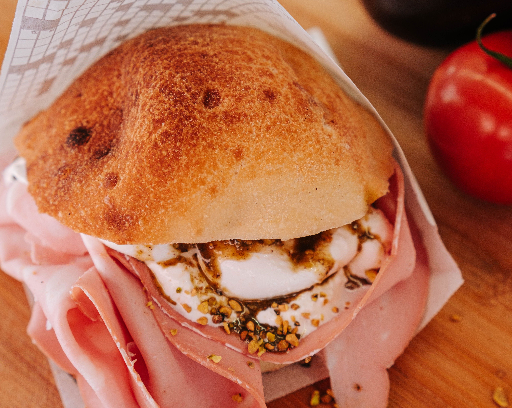

Focaccia Mortadella
Back to Home

Photo by Kei Scampa from Pexels / Cropped from original
Description
Focaccia Mortadella is an Italian Sandwich, though it has many versions and can mean a lot of different things, we are going to recreate the sandwich version known as "La Paradiso" from a famous Florence sandwich shop "All'Antico Vinaio". It consists of crisp edged Italian bread called "schiacciata", which is spread with a pistachio cream on one side with a little drizzle of extra virgin olive oil on both sides. A big pile of thinly sliced Mortadella with stracciatella on top, and is topped with crushed pistachios.
Ingredients
- 590 ml lukewarm water
- 6 g dry yeast (or 1 teaspoon)
- 1 teaspoon sugar
- 700 g wheat floor
- 12 g salt flakes
- 100 ml olive oil, plus some extra
- 0.5 bunch of thyme
- rectangular baking pan of about 40x25 cm
- 250 g cream cheese
- 250 g basil pesto
- 1 romaine lettuce
- a few slices of aged Gouda or other cheese
- a few slices of mortadella piccante
- 1 large sweet onion, sliced
- hot sauce
Steps
- Mix water, yeast, and sugar in a large bowl. Let it rest for 5 minutes. Add the flour and half of the salt and mix together with a spatula. Pour half of the olive oil over it and let it rest for at least 2 hours or put it in the fridge overnight.
- Preheat the oven to 230 °C.
- Grease your baking pan with some of the remaining olive oil and pour the dough into it. Push it into the corners. Let it rest and pour the rest of the olive oil over it. Make dimples with your fingers to make the dough airier. Be careful, very ASMR. Not sure what this means? Just ask your kids.
- Sprinkle the rest of the salt over it, along with the thyme.
- Bake for 30 minutes at 230 °C.
- Remove the focaccia from the pan to cool. This keeps it crispy.
- Cut into large rectangles. Then cut those in half lengthwise and spread one side with cream cheese and the other with pesto. Generously top with lettuce, cheese, mortadella, onions, and hot sauce if you like. Press down a bit and put on your biggest smile. It'll be fine!
Back to Home